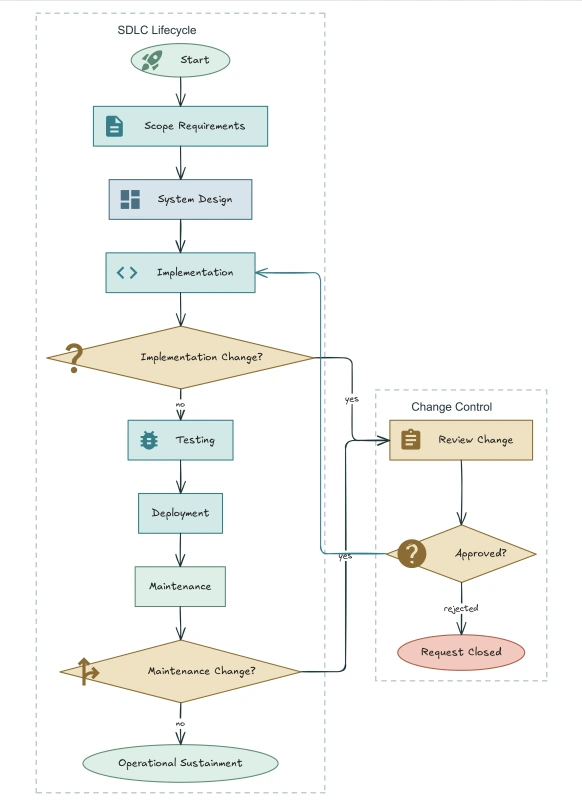
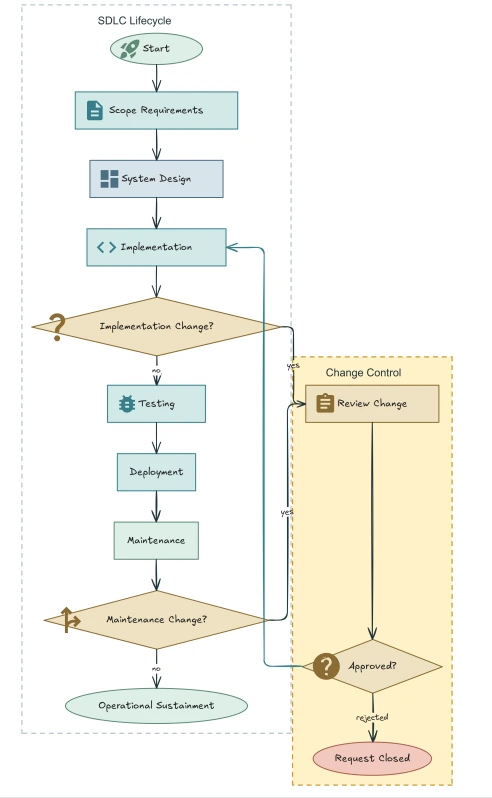

Structure
Identify entities, relations, groups, and hierarchy from the source content.
Semantic graph GAgentic Editable Diagram Creation
via Design Expertise Evolution
Diagrams you can edit. Design expertise that evolves.
A small, interactive illustration of the framework. The research system will be released with the code.
01 / THE IDEA
Good diagrams need more than good pixels. They need the right relationships, a clear visual hierarchy, and room to refine.
EvoDesign creates diagrams as structured, editable canvas objects. Specialized agents coordinate semantic structure, visual style, and spatial layout. Rendered feedback then guides local repairs—and turns those repairs into reusable design expertise.
02 / THE FRAMEWORK
One editable representation connects
generation, refinement, and learning.
Identify entities, relations, groups, and hierarchy from the source content.
Semantic graph GTranslate visual intent into consistent colors, shapes, typography, and emphasis.
Visual encoding SEstimate element sizes, arrange nested groups, and route connections on the canvas.
Spatial configuration LCombine geometric checks with VLM critique to localize defects and repair affected objects.
Verified refinement ↺Refinement traces become reusable knowledge,
with evidence preserved at every level.
Each candidate strategy is linked to the specific findings, edits, and outcomes that support it. Repeated support across compatible contexts promotes strategies into domain guidelines; support across diagram types promotes guidelines into general principles. Retrieval uses agent role, diagram type, and domain, while maintenance prunes, merges, promotes, or demotes memory items.
03 / A CLOSER LOOK
When a diagram becomes crowded, EvoDesign updates the affected objects in the canvas manifest. Semantic structure can stay intact while spacing, routing, and visual grouping improve.
Software development lifecycle with change control. Artifacts from the manuscript’s refinement case study (Figure 9); shown for qualitative inspection.

Crowded subprocess & return paths

Clearer spacing & visual grouping
04 / THE BENCHMARK
A benchmark built around what
an editable canvas can represent.
Canvas-recoverable diagram–instruction pairs spanning real-world visual topologies. The 5,853-sample training/evolution split supports expertise accumulation; the balanced test split contains 20 samples per diagram type.
Content integrityFidelity · Concept logic · Relevance
Visual presentationAesthetics · Consistency · Flow · Space
Cognitive utilityEase · Accuracy · Self-contained explanation
05 / REPORTED RESULTS
The manuscript evaluates semantic fidelity, visual organization, and cognitive usability using VLM judges on a five-point scale.
| Method | Representation | Content / 5 | Visual / 5 | Cognitive / 5 |
|---|
Dimension means are calculated from the 10 metrics in manuscript Table 1 (3 content, 4 visual, 3 cognitive). The pixel baseline uses GPT-4o-Image and stays fixed across backbone selections. These are manuscript-reported results, not an independent reproduction.
Space balanceover one-shot schema prompting
Cognitive easeover one-shot schema prompting
GPT-5.5 backbone
Individual metrics on a 1–5 scale
Manuscript Table 1
CONTINUE EXPLORING
The EvoDesign code release is on the way.
Follow the repository for implementation updates.